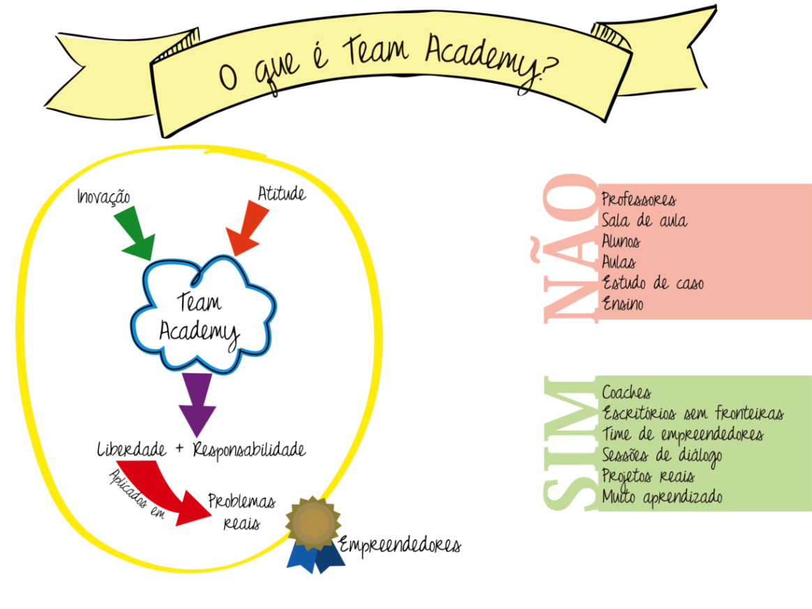

Team Academy #2, Simplicidade, a Alma do Negócio…
Olá Pessoal,
Como tinha dito, ficou claro que o Pro Academy, uma das boas descobertas que fiz aqui na geladeira, era apenas a ponta do Iceberg. No post 15 falei do Team Academy Brasil, cujo blog define assim essa experiência pedagógica: “Team Academy é um modelo de educação inovador que combina aprendizado, busca de sonhos profissionais, você conectando com o mundo e uma vasta rede de oportunidades ligadas a equipes empreendedoras.”. Por essa definição, percebe-se que o modo de aprender no Team Academy é integrado ao trabalho e à resolução de problemas. Simplesmente coloca-se a mão na massa, ou as mãos, no caso, já que tudo cresce com a colaboração entre as pessoas. É claro que essa prática está investida de muitas reflexões teóricas. “A pedagogia atual do Team Academy é pura e simples: pessoas aprendem juntas em times compartilhando experiências a partir da vida cotidiana (…) Os aprendizes participam de projetos reais, trabalham como empreendedores e ganham dinheiro por eles mesmo. A prática é o professor” (fonte). A teoria da criação do conhecimento organizacional, de Nonaka & Takeushi, é uma das fortes influências teóricas que movem o Team Academy. O foco não está somente no indivíduo, mas no aprendizado do grupo e da organização. As vezes, a educação é muito focada no aprendizado indivídual, sem considerar o aprendizado coletivo.
Mas, vendo assim, é uma metodologia tão simples que até desconfiamos dela. Apesar disso, tem dado muito certo, sendo usada em universidades e também em empresas, startups, ensino técnico e até ensino médio. O Team Academy tem se espalhado pelo mundo, como ilustra a figura abaixo. São vários na Finlândia e na Europa, mais alguns espalhados por quase todos os continentes. Desde a criação, a metodologia já teve mais de 10.000 usuários. Atualmente tem rodado em mais de 15 países, 47% dos formandos tornam-se empreendedores após 2 anos de formação. Já foram gerados mais de 2 milhões de euros por empresas de estudantes, só no Team Academy de Jyväskyla (2014, fonte). Realmente não é algo pequeno, como imaginava.
Fonte: Blog Team Academy Brazil
Como eu já mensionei anteriormente, no post do Pro Academy, no método educacional do Team Academy não há professores, nem salas de aula, nem alunos, nem aulas, nem estudos de caso, nem ensino e nem controle. No lugar disso, há treinadores, onde havia professores; escritórios sem fronteiras onde havia salas de aula; time de empreendedores onde havia alunos; sessões de diálogos onde antes havia aulas; e, sobretudo, projetos reais no lugar dos velhos estudos de caso ou cenários criados pelo professor. O aprendizado é o foco, e não o ensino. Ao invés do controle, o foco é na autogestão. Em resumo, os alunos trabalham por conta própria, realizando projetos, formando equipes e resolvendo problemas reais, com a orientação de treinadores e sessões de diálogo.

Fonte: Blog Team Academy Brazil
Como eu também já comentei no post sobre o Pro Academy, os aprendizes formam times logo no primeiro ano de curso. Os times funcionam como empresas (chamadas de empresas-time) e são acompanhadas por um treinador. Os projetos realizados pelos times são reais, com clientes reais. O cliente é a maior fonte de aprendizado prático na metodologia, ele é o centro do processo pedagógico. Entretanto, também são feitas leituras, de um livro a cada duas semanas, e os aprendizes devem fazer relatórios do seu aprendizado. No final, como projeto de final de curso, os aprendizes devem realizar uma viagem para outro país e resolver um problema lá.
{kind=link}
Fonte: Blog Team Academy Brazil
As sessões de diálogo, junto com a prática, são a base da metodologia. Elas acontecem de uma a duas vezes por semana com o time e o treinador, com duração de 4 horas. Eventos com apresentação de resultados também ocorrem periodicamente, cerca de uma vez por mês. O projeto possui um lider, escolhido pelos próprios membros do time. Ele também possui líderes para cada área, por exemplo, marketing, tecnologia, etc. Veja como isso se dá assistindo o vídeo abaixo:
Funcionamento Team Academy Brasil
Mostrarei outros dois vídeos muito interessantes no próximo post. Um deles tem relatos de aprendizes e treinadores sobre o método, com relatos reais de aprendizes que se tornaram empreendedores. O outro vídeo é do renomado Peter Senge, autor do Best Seller “A Quinta Disciplina”, comentando o Team Academy. Mas esses vídeos e respectivos comentários irão para o próximo post.
Aguardem. 
Muito obrigado, e até muito breve.
Que vídeo legal!
Essas ideias são encantadoras, dá até vontade de fazer também rsrs
Show!